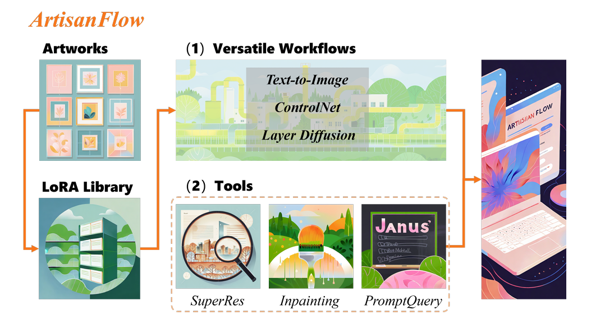
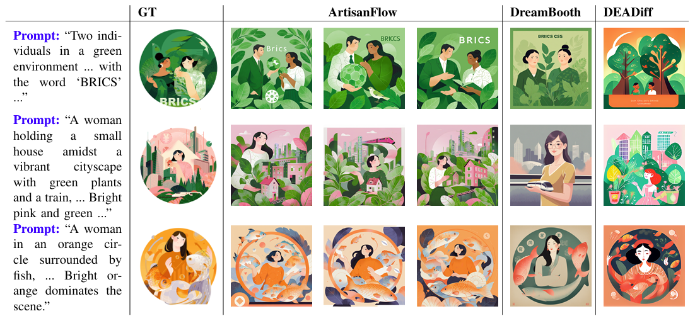

ArtisanFlow
A practical style customization system for illustration generation.

Key Features
- 🔧 Easy integration of personal artistic styles via LoRA fine-tuning
- 🎨 High stylistic fidelity and semantic accuracy
- 📦 Compatible with ControlNet & Layer Diffusion
- 🧩 Modular & user-friendly node-based interface
- 🖼️ Multi-dimensional evaluation: style, semantics, stability, flexibility
Generation Results
